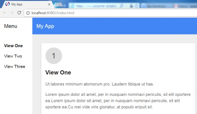
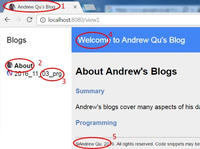

<link rel="import" href="../bower_components/polymer/polymer.html">
<link rel="import" href="copy-right.html">
<link rel="import" href="shared-styles.html">
<link rel="import" href="blg-title.html">
<link rel="import" href="blg-desc.html">
<link rel="import" href="sec-title.html">

<dom-module id="my-2016_11_03_prg">
    <template>
        <style include="shared-styles">
            :host {
                display: block;
                padding: 5px;
            }
        </style>

        <blg-title title="Learning Polymer - One Bright Future for Web Development">
        </blg-title>
        <blg-desc>With the new HTML5 "import" feature, web development can be
            componentized in the future. Google Polymer project aims to provide
            optimized core web components, tools to build web components and most
            importantly, provide <i>Polyfill</i> that allows to consume web
            components before major browsers are ready for the HTML5 import feature.
            In this blog, I will describe my experience in learning Polymer. 
        </blg-desc>
        <sec-title>Polymer Installation</sec-title>
        I am developing on Windows. Therefore, the following are the steps for 
        windows installaiton. 
        <ul>
            <li>Install git - already installed on my machine.
                Need to make sure that "Run git from windows commadn prompt" is checked.
            </li>
            <li>Install node.js from <a href="https://nodejs.org/en/">https://nodejs.org/en/</a></li>
            <li>Open a console command window, and type command:</li>
            <li>c:\&gt; npm install -g bower</li>
            <li>c:\&gt; npm install -g polymer-cli</li>
        </ul>
        <b>npm</b> is a package installer comes with jode.js<br />
        <b>bower</b> is also a package installer. Polymer uses it to install
        components and check dependencies.<br />
        <b>poly-cli</b> is the polymer command line tool to assit Polymer development,
        like creating project templates, unit testing etc. It also comes with a
        developer web server to serve Polymer projects.<br />

        <sec-title>Creating Polymer Application</sec-title>
        I am aiming to rewrite my blog site using Polymer as a Polymer application.
        polymer can also be used to build re-usable web components, called Polymer
        elements.
        <p>With polymer-cli installed, creating an initial application is easy.
            I will name my application as blogapp.</p>
        <ul>
            <li>Open a command window</li>
            <li>c:\&gt; mkdir blogapp</li>
            <li>c:\&gt; cd blogapp</li>
            <li>c:\&gt; polymer init start-kit</li>
            <li>c:\&gt; polymer serve --open</li>            
        </ul>
        With the last command, you should see the app (web site) in the default browser.
        <br /><br />

        <sec-title>Customizing the Initial Polymer Application</sec-title>
        The first thing I want to do is to rename file my-app.html to my-blogs.html.
        This is basically renaming the component name, since "my-app" is a component.
        The steps are :
        <ul>
            <li>Rename the file my-app.html to my-blogs.html</li>
            <li>Open file my-blogs.html</li>
            <li>Change line to : &lt;dom-module id="my-blogs"&gt;</li>
            <li>Change line to : is: 'my-blogs',</li>
            <li>Open file index.html</li>
            <li>Change line to: &lt;link rel="import" href="/src/my-blogs.html"&gt;</li>
            <li>Change line to: &lt;body&gt; &lt;my-blogs&gt;&lt;/my-blogs&gt;</li>
        </ul>
        Basically, I changed the component id and the reference to it. This shows how
        component id is defined and how it is referenced.
        <p><b>Task <span style="color:red;">(1)</span></b> : The next thing I wanted to do was to change the logo and page title, as
            marked <span style="color:red;">(1)</span> in the below picture.
            The steps are:</p>
        <ul>
            <li>Change icons file in images/favicon.ico</li>
            <li>Change png files in images/manifest/*.png</li>
            <li>Open file index.html</li>
            <li>Change line to : &lt;title&gt;Andrew Qu's Blog&lt;/title&gt;  </li>
        </ul>
        
        <p><b>Task <span style="color:red;">(2)</span> </b>
        Change View1 page to About page; Delete view2 and view 3; Reduce spacing
        between the items. Steps are :</p>
        <ul>
            <li>Open file my-blogs.html</li>
            <li>Change line to: &lt;a name="view1" href="/view1"&gt;
                &lt;img src='img/about.png' /&gt; About&lt;/a&gt; </li>
            <li>Delete line to do with view2 and view3</li>
            <li>Delete line &lt;my-view1 name="view1"&gt;&lt;/my-view1&gt;</li>
            <li>Delete line &lt;my-view2 name="view2"&gt;&lt;/my-view2&gt;</li>
            <li>Delete files my-view2.html and my-view3.html</li>
            <li>Createa new folder: src/img</li>
            <li>Create src/img/about.png file</li>
            <li>Change file polymer.json accordingly. This is not necessary if you are
                not exporting your components.</li>
            <li>In my-blogs.html file, change: line-height: 40px; to line-height: 20px;</li>
            <li>Add contents to my-view1.html</li>
        </ul>
<p><b>Task <span style="color:red;">(3)</span> </b>
    Add a new blog page (this blog page). Steps are :</p>
<p>1. Create a new file src/my-2016_11_03_prg.html. Polymer recommendss
      a component name has a hyphen. Also the file name is
      prefixed with "my-", because the page loading convention defined in my-blogs.html :
<pre>    _pageChanged: function(page) {
       // Load page import on demand. Show 404 page if fails
       var resolvedPageUrl = this.resolveUrl('my-' + page + '.html');
       this.importHref(resolvedPageUrl, null, this._showPage404, true); },
</pre>
<p>2. Copy initial code from my-view1.html and change component id to my-2016_11_03_prg</p>
<pre>

&lt;link rel="import" href="../bower_components/polymer/polymer.html"&gt;

&lt;dom-module id="my-2016_11_03_prg"&gt;
    &lt;template&gt;
        &lt;style&gt;
            :host {
                display: block;
                padding: 5px;
            }
        &lt;/style&gt;

        Learning Polymer - One Bright Future for Web Development
    &lt;/template&gt;
    &lt;script&gt;
        Polymer({
            is: 'my-2016_11_03_prg',
        });
    &lt;/script&gt;
&lt;/dom-module&gt;
</pre>
<p>3. Modify my-blogs.html to import and reference the new web component.</p>
<pre>
          &lt;a name="view1" href="/view1"&gt;
             &lt;img src='img/about.png' /&gt; About&lt;/a&gt;
          &lt;a name="2016_11_03_prg" href="/2016_11_03_prg"&gt;
             &lt;img src='img/2016_11_03_prg.png' /&gt; 2016_11_03_prg&lt;/a&gt;
          ....
          &lt;my-view1 name="view1"&gt;&lt;/my-view1&gt;
          &lt;my-2016_11_03_prg name="2016_11_03_prg"&gt;&lt;/my-2016_11_03_prg&gt;
          &lt;my-view404 name="view404"&gt;&lt;/my-view404&gt;
</pre>
Of course, I have added a new png file, img/2016_11_03_prg.png,
using the Polymer logo. Now, if you refresh the web site in the browser,
the newly added page should be visible with the initial contents.
<p><b>Task <span style="color:red;">(4)</span> </b>
    Adjusting the banner text and style. Modify the following code:</p>
<pre>
      &lt;app-toolbar&gt;
         &lt;paper-icon-button icon="menu" drawer-toggle&gt;&lt;/paper-icon-button&gt;
         &lt;div main-title&gt;Welcome to Andrew Qu's Blog&lt;/div&gt;
      &lt;/app-toolbar&gt;
</pre>
In the above, the paper-icon-button is initally hidden. When the browser window is
smaller than a certain amount, the left menu column will disappear. This menu button
will appear. Click on the menu button, the menu column will appear and overlap with
the main page  window.
<p><b>Task <span style="color:red;">(5)</span> </b>Adding the page footer (copy right notice)</p>
In my old blog site code, I have the following code repeated in every blog file:
<pre>
    &lt;div class="botbar"&gt;
        &lt;hr /&gt;
        &copy;Andrew Qu, 2014. All rights reserved. Code snippets may be
        used &quot;AS IS&quot;. DIY tips may be followed at your own risk.
    &lt;/div&gt;
</pre>
This not only repeats a lot, but also when the year changes, the copyright notice
gets outdated, unless I manually change them.
This is a perfect example of using web component. the steps are similar to
    defining this blog page.
<p>1. Define the copy-right.html file. Note, there is no "my-" prefix.</p>
<pre>
&lt;link rel="import" href="../bower_components/polymer/polymer.html"&gt;

&lt;dom-module id="copy-right"&gt;
    &lt;template&gt;
        &lt;style&gt;
            :host {
                display: block;
                padding: 0px;
            }
            .botbar
            {
                background-color:#efefef;
                font-size:11px;
                text-align:left;
            }
        &lt;/style&gt;

        &lt;hr /&gt;
        &lt;div class="botbar"&gt;&copy;Andrew Qu, 2016.
        All rights reserved. Code snippets may be used &quot;AS IS&quot;. 
        DIY tips may be followed at your own risk.
        &lt;/div&gt;
    &lt;/template&gt;
    &lt;script&gt;
        Polymer({
            is: 'copy-right',
        });
    &lt;/script&gt;
&lt;/dom-module&gt;
</pre>
With this defined, I can import and insert the notice into every blog file
very easily. Also when year changes, I only need to change in one place.
<pre>
&lt;link rel="import" href="copy-right.html"&gt;
&lt;copy-right&gt;&lt;/copy-right&gt;
</pre>
<sec-title>Other Items worth Mentioning</sec-title>
<b>Importing shared styles</b> Shared styles (css) are defined in shared-styles.html
This is also a web component and can be imported into any file. For example, I have
defined a global style:
<pre>
    .sectitle
    {
        color:#4F81BD;
        font-size:medium;
    }
</pre>
To import and use the style, we have to add the following code (into my blog file):
<pre>
&lt;link rel="import" href="<span style="color:red">shared-styles.html"</span>&gt;

&lt;dom-module id="my-2016_11_03_prg"&gt;
    &lt;template&gt;
        &lt;style include="<span style="color:red">shared-styles</span>"&gt;
</pre>
<p>The style can now be used anywhere in the page as if it were defined locally. the
    shared-style.html may be imported many times, but at runtime, only one copy is
    downloaded. Polymer will cache the contents and import where needed. </p>
<p><b>Overriding default style property</b>
The width of the menu column on the left can be adjusted. This is controlled
by --app-drawer-width parameter. In app-drawer.html file (automatically created), I can
see lines like below:
</p>
<pre>
    width: var(--app-drawer-width, 256px);
</pre>
256px is the default value, if the parameter is not defined. To define the parameter,
in my-blogs.html, I have added:
<pre>
    &lt;style&gt;
      app-drawer {
         --app-drawer-width: 180px;
      }
</pre>
This reduces the menu column width to 180px.
<p><b>Add Properties to a Component</b> Parameters can be passed to a web component.
The parameters are defined in the web component file as properties. For example,
</p>
<pre>
    &lt;dom-module id="blg-title"&gt;
    &lt;template&gt;
        ....
        &lt;h2&gt; { { title } }&lt;/h2&gt;
    &lt;/template&gt;
    &lt;script&gt;
        Polymer({
            is: 'blg-title',
            properties : {
                title: {
                    type: String,
                    value: "Missing title"
                }
            }
        });
    &lt;/script&gt;
&lt;/pre&gt;
</pre>
In the above, I defined a property called "title". When using the component, the
property can be passed using attributes. For example,
<pre>
&lt;blg-title title="Learning Polymer - One Bright Future for Web Development"&gt;&lt;/blg-title&gt;
</pre>
        <copy-right></copy-right>
    </template>
    <script>
        Polymer({
            is: 'my-2016_11_03_prg',
        });
    </script>
</dom-module>
